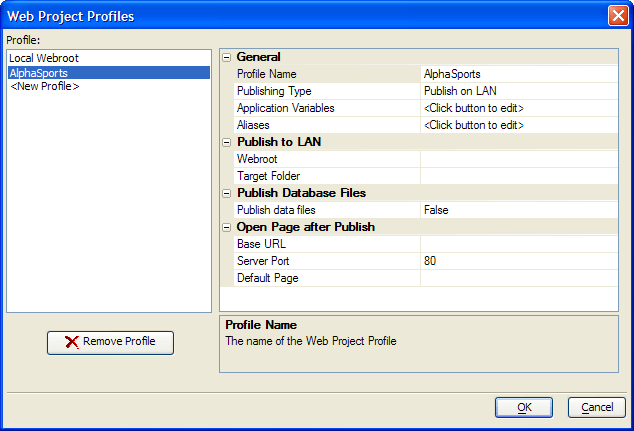
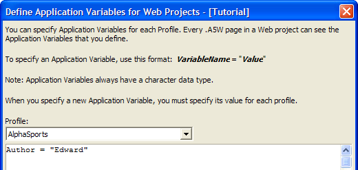
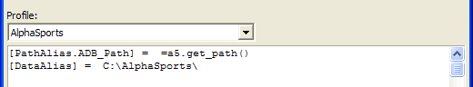
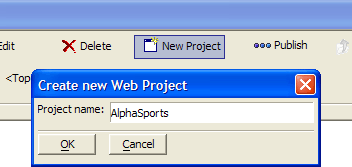

Configuring the Development Environment
The first step in your preparation for developing web applications is to create one or more web project profiles. A web project profile defines where you will be publishing your files, both for testing and for deployment. You can have as many profiles as you need. By default you start with one profile named "Local Webroot". You need to create one more profile that defines the location of the publicly available website.
Creating a New Web Project Profile
If you were going to support two websites for local (LAN) and remote (WAN) users, you could create two more profiles named "LAN" and "WAN" or "Local" and "Remote". Any unique name is acceptable for a new profile. (You can see an example of a server profile at Publishing a Page to a Server.)
Click Profiles (or Web > Project Settings... ) to display the Web Project Properties dialog box.
Select "Local Webroot" in the Profile list.
Select "
" in the Profile list. In the General section of the properties list replace "
" with "AlphaSports".

Application variables are variables that are available to every page you create. Click
 in the General > Application Variables field to display the Define Application Variables for Web Projects dialog box. Enter Author = "your_name" and click OK.
in the General > Application Variables field to display the Define Application Variables for Web Projects dialog box. Enter Author = "your_name" and click OK.

Click
in the General > Aliases field to display the Define Path and Connection Aliases for Web Projects dialog box. These are the types of aliases you will need to create. Note that the alias names and paths used below are for illustration. The values that you use for the alias names can be different. For example, you could replace all instances of PathAlias.ADB_Path with MyDatabasePath without a problem.
Database | Development Computer | Server Computer |
Alpha Five | PathAlias.ADB_Path = =a5.get_path() | PathAlias.ADB_Path = \\servername\dbfoldername\ |
You need to create this alias to point to the location of the published Alpha Five database and its tables. |
| |
Microsoft Access | PathAlias.MDB_Path = c:\somepath\ | PathAlias.MDB_Path = \\servername\dbfoldername\ |
You need to create this alias to point to the location of the published Microsoft Access MDB file and its tables. |
| |
Microsoft Access, MySQL, and other databases that use connection strings | ConnectionAlias = connection_string | ConnectionAlias = another_connection_string |
This alias defines another connection string used to connect to the public copy of your database. |
| |
Optional for all databases | MyDataPath = c:\somepath\ | MyDataPath = \\servername\someotherpath\ |
You need to create this alias to point to the location of the published additional files used by the application. For example, they could be images or PDF files. |
|
You may create as many aliases as you need to properly publish your projects.
 Note : An expression ( =a5.get_path()) is preceded by a equal sign "=", unlike a constant value ( C:\AlphaSports\ ).
Note : An expression ( =a5.get_path()) is preceded by a equal sign "=", unlike a constant value ( C:\AlphaSports\ ).

In the Publish to LAN > Webroot field enter the location of your server computer's webroot (i.e. \\myserver\A5Webroot ). This will be the live, public database.
When you publish your web application using a profile other than the "Local Webroot" profile, you can also publish your data files. These files are the .DBF, .FPT, .CDX, .DDD, .DDM, .DDX, .SET, .SEM and .SEX files (in the case of native Alpha Five tables), and .MDB files in the case of applications that read from Microsoft Access tables. Check the Publish Database Files > Public data files check box.
Click
in the Publish Database Files > Publish data files field to display the Select Database Files to Publish dialog box.Click Select All > OK.
Click OK to finish configuring your new profile.
A project is a container that organizes all of the files (web components, HTML pages, images, etc.) that are part of one or more related web pages.
Click New Project.
Enter "AlphaSports" and click OK.

See Also
Contents, Publishing a Page to a Server